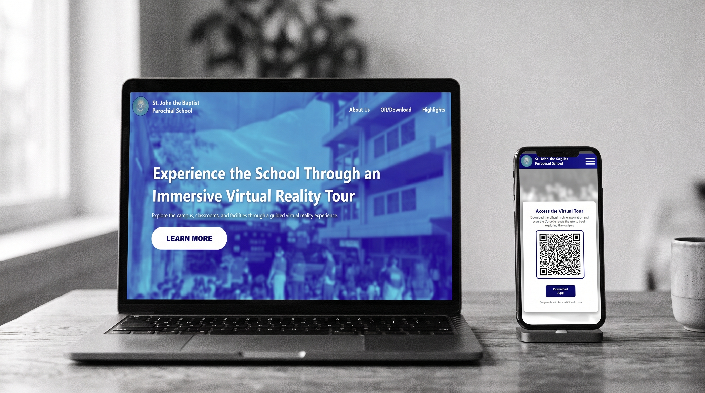

Role
3D Modeler
Sub-Developer
Case study / 03
An augmented reality-based virtual tour system for St. John the Baptist Parochial School. The project aims to help prospective students, parents, and visitors explore the school through an interactive digital experience.

Explore the projectOverview
The project is an augmented reality-based virtual tour system developed for St. John the Baptist Parochial School in Taytay, Rizal. It provides users with a digital way to explore the school's buildings and surroundings through 3D models and interactive navigation. The goal is to make discovering the campus more engaging and accessible.
Role
3D Modeler
Sub-Developer
Tools
Blender
Unity
C#
Methodology
Agile Development
Alpha Testing
01 / The problem
Learning about a school's facilities often depends on photos, descriptions, or an in-person visit. These options may not fully communicate the layout of the campus or give visitors a clear sense of the environment. A more interactive approach can help users become familiar with the school's spaces before visiting in person.
02 / The goal
The goal was to develop a virtual tour that allows users to explore the school's buildings and surroundings in a more engaging way. Through augmented reality, 3D models, and navigation features, the system aims to help users understand the campus layout and discover its facilities.
03 / My contribution
I contributed to the project as a 3D modeler and sub-developer. My work involved creating 3D models of the school's buildings and assets in Blender, then preparing and integrating these models into Unity. I also assisted with development tasks to help bring the virtual campus environment together.
04 / The solution
The system combines 3D school environments with interactive navigation to give users a digital tour of the campus. The modeled buildings and surrounding areas form the foundation of the experience, while navigation elements help users move through the environment and explore different locations.
05 / Key features
Three-dimensional models represent the school's buildings and help users visualize the campus environment.
Allows users to explore modeled school spaces through a digital environment.
Navigation elements, including the preschool area's minimap, help users understand their location and move around the virtual environment.
Augmented reality is used as part of the project to connect digital 3D content with the user's exploration experience.
06 / Development process
The project follows an Agile development approach, allowing the team to develop and refine the system incrementally. My workflow included modeling buildings and assets in Blender, bringing them into Unity, and helping improve the virtual environment as development progressed. During testing, the team could identify areas that needed adjustments before further refinement.
07 / Testing and refinement
Alpha testing is part of the project's development process. It helps the team evaluate the system's functionality, navigation, and overall experience, identify issues, and determine what needs improvement. Feedback from testing can guide the next round of refinements.
08 / Reflection
Working on this project helped me understand how 3D modeling contributes to a larger interactive system. Creating assets is only one part of the process; they also need to work properly inside the game engine and support the user's experience. It gave me a better appreciation of collaboration, asset integration, and continuous improvement during development.